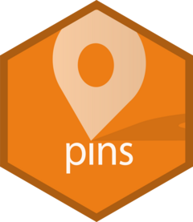

Overview

You can use the pins package to:
-
Pin remote resources locally with
pin(), work offline and cache results. -
Discover new resources across different boards using
pin_find(). -
Share resources in local folders, GitHub, Kaggle, and RStudio Connect by registering new boards with
board_register().
Installation
# Install the released version from CRAN:
install.packages("pins")To get a bug fix, or use a feature from the development version, you can install pins from GitHub.
# install.packages("remotes")
remotes::install_github("rstudio/pins")Usage
Pin
There are two main ways to pin a resource:
-
Pin a remote file with
pin(url). This will download the file and make it available in a local cache:url <- "https://raw.githubusercontent.com/facebook/prophet/master/examples/example_retail_sales.csv" retail_sales <- read.csv(pin(url))This makes subsequent uses much faster and allows you to work offline. If the resource changes,
pin()will automatically re-download it; if goes away,pin()will keep the local cache. -
Pin an expensive local computation with
pin(object, name):library(dplyr) retail_sales %>% group_by(month = lubridate::month(ds, T)) %>% summarise(total = sum(y)) %>% pin("sales_by_month")Then later retrieve it with
pin_get(name).pin_get("sales_by_month") #> # A tibble: 12 x 2 #> month total #> <ord> <int> #> 1 Jan 6896303 #> 2 Feb 6890866 #> 3 Mar 7800074 #> 4 Apr 7680417 #> 5 May 8109219 #> 6 Jun 7451431 #> 7 Jul 7470947 #> 8 Aug 7639700 #> 9 Sep 7130241 #> 10 Oct 7363820 #> 11 Nov 7438702 #> 12 Dec 8656874
Discover
You can also discover remote resources using pin_find(). It can search for resources in CRAN packages, Kaggle, and RStudio Connect. For instance, we can search datasets mentioning “seattle” in CRAN packages with:
pin_find("seattle", board = "packages")
#> # A tibble: 6 x 4
#> name description type board
#> <chr> <chr> <chr> <chr>
#> 1 hpiR/ex_sales Subset of Seattle Home Sales from hpiR packag… table packa…
#> 2 hpiR/seattle_sales Seattle Home Sales from hpiR package. table packa…
#> 3 latticeExtra/Seat… Daily Rainfall and Temperature at the Seattle… table packa…
#> 4 microsynth/seattl… Data for a crime intervention in Seattle, Was… table packa…
#> 5 vegawidget/data_s… Example dataset: Seattle daily weather from v… table packa…
#> 6 vegawidget/data_s… Example dataset: Seattle hourly temperatures … table packa…Notice that the full name of a pin is <owner>/<name>. This namespacing allows multiple people (or packages) to create pins with the same name.
You can then retrieve a pin through pin_get():
seattle_sales <- pin_get("hpiR/seattle_sales") %>% print()
#> # A tibble: 43,313 x 16
#> pinx sale_id sale_price sale_date use_type area lot_sf wfnt bldg_grade
#> <chr> <chr> <int> <date> <chr> <int> <int> <dbl> <int>
#> 1 ..0001… 2013..2… 289000 2013-02-06 sfr 79 9295 0 7
#> 2 ..0001… 2013..2… 356000 2013-07-11 sfr 18 6000 0 6
#> 3 ..0001… 2010..2… 333500 2010-12-29 sfr 79 7200 0 8
#> 4 ..0001… 2016..6… 577200 2016-03-17 sfr 79 7200 0 8
#> 5 ..0001… 2012..9… 237000 2012-05-02 sfr 79 5662 0 7
#> 6 ..0001… 2014..5… 347500 2014-03-11 sfr 79 5830 0 7
#> 7 ..0001… 2012..2… 429000 2012-09-20 sfr 18 12700 0 7
#> 8 ..0003… 2015..2… 653295 2015-07-21 sfr 79 7000 0 7
#> 9 ..0003… 2014..4… 427650 2014-02-19 townhou… 79 3072 0 7
#> 10 ..0003… 2015..6… 488737 2015-03-19 townhou… 79 3072 0 7
#> # … with 43,303 more rows, and 7 more variables: tot_sf <int>, beds <int>,
#> # baths <dbl>, age <int>, eff_age <int>, longitude <dbl>, latitude <dbl>Or explore additional properties in this pin with pin_info():
pin_info("hpiR/seattle_sales")
#> # Source: packages<hpiR/seattle_sales> [table]
#> # Description: Seattle Home Sales from hpiR package.
#> # Properties:
#> # rows: 43313
#> # cols: 16Share
Finally, you can share resources with other users by publishing to Kaggle, GitHub, RStudio Connect, Azure, Google Cloud, S3, DigitalOcean or integrate them into your website as well.
To publish to Kaggle, you would first need to register the Kaggle board by creating a Kaggle API Token:
board_register_kaggle(token = "<path-to-kaggle.json>")You can then easily publish to Kaggle:
pin(seattle_sales, board = "kaggle")
Learn more in vignette("boards-understanding")
RStudio
Experimental support for pins was introduced in RStudio Connect 1.7.8 so that you can use RStudio and RStudio Connect to discover and share resources within your organization with ease. To enable new boards, use RStudio’s Data Connections to start a new ‘pins’ connection and then select which board to connect to:

Once connected, you can use the connections pane to track the pins you own and preview them with ease. Notice that one connection is created for each board.

To discover remote resources, simply expand the “Addins” menu and select “Find Pin” from the dropdown. This addin allows you to search for pins across all boards, or scope your search to particular ones as well:

You can then share local resources using the RStudio Connect board. Lets use dplyr and the hpiR_seattle_sales pin to analyze this further and then pin our results in RStudio Connect.
board_register_rsconnect(name = "myrsc")
seattle_sales %>%
group_by(baths = ceiling(baths)) %>%
summarise(sale = floor(mean(sale_price))) %>%
pin("sales-by-baths", board = "myrsc")After a pin is published, you can then browse to the pin’s content from the RStudio Connect web interface.

You can now set the appropriate permissions in RStudio Connect, and voila! From now on, those with access can make use of this remote file locally!
For instance, a colleague can reuse the sales-by-baths pin by retrieving it from RStudio Connect and visualize its contents using ggplot2:
library(ggplot2)
board_register_rsconnect(name = "myrsc")
pin_get("sales-by-baths", board = "myrsc") %>%
ggplot(aes(x = baths, y = sale)) +
geom_point() +
geom_smooth(method = 'lm', formula = y ~ exp(x))
Pins can also be automated using scheduled R Markdown. This makes it much easier to create Shiny applications that rely on scheduled data updates or to share prepared resources across multiple pieces of content. You no longer have to fuss with file paths on RStudio Connect, mysterious resource URLs, or redeploying application code just to update a dataset!